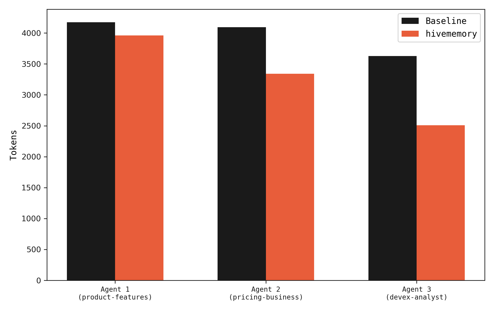
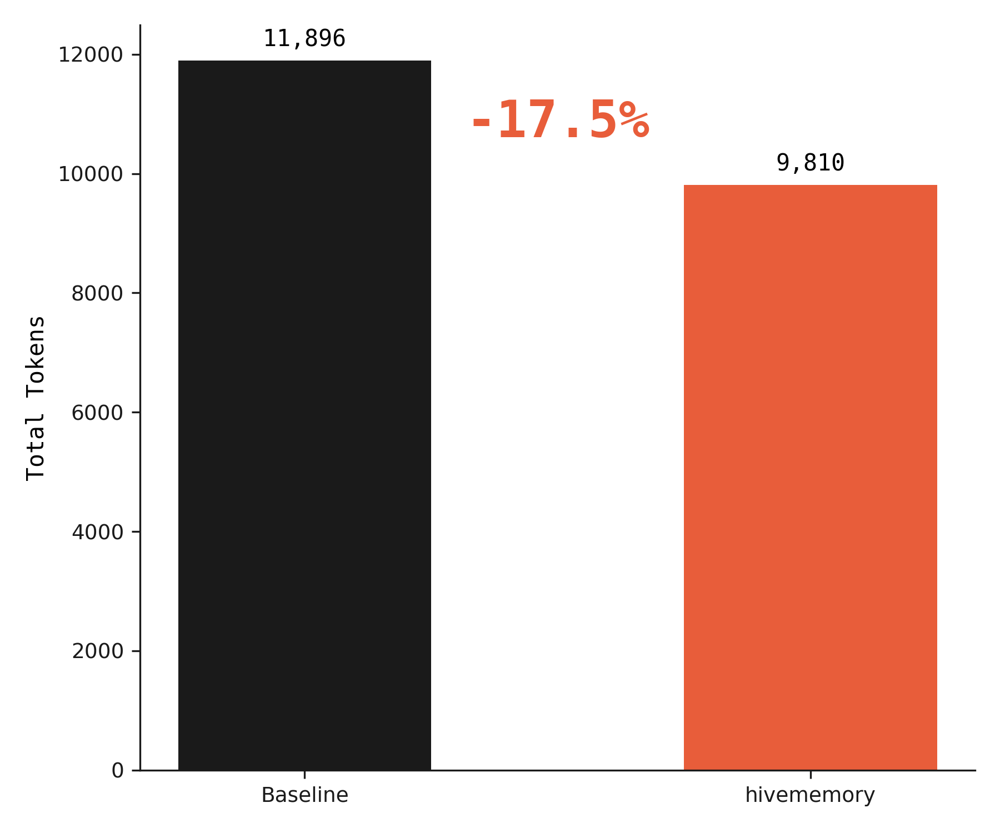
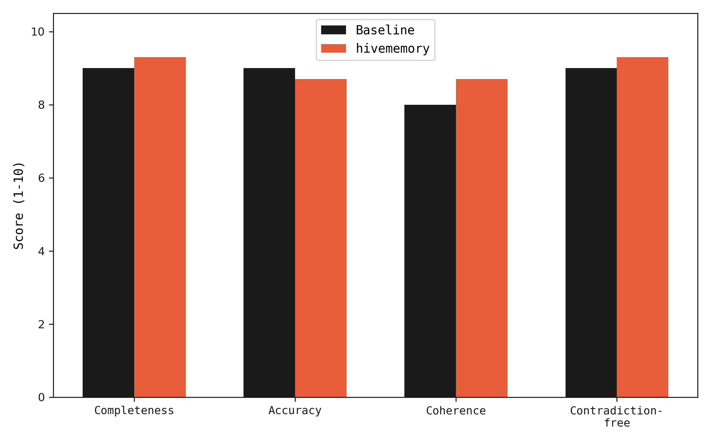
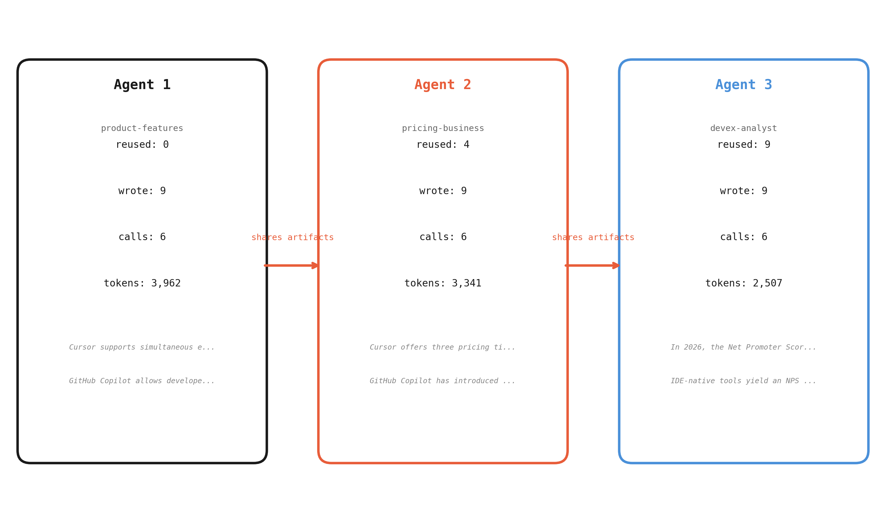
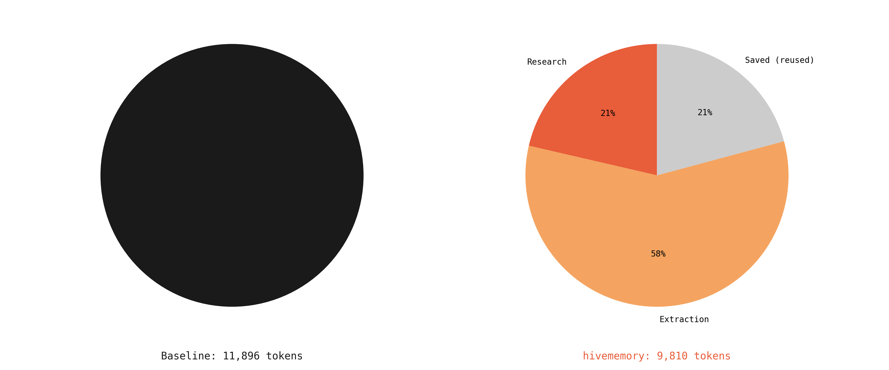
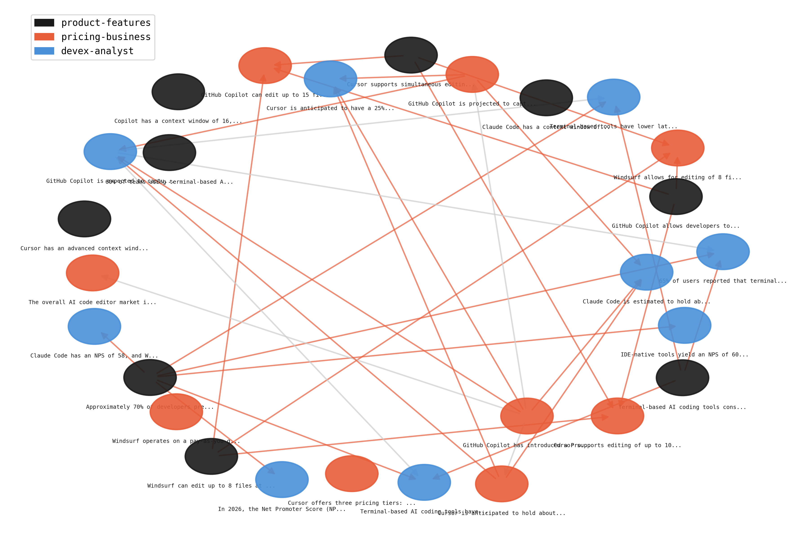

Three agents research "Competitive Landscape of AI Code Editors in 2026" using gpt-4o-mini. Each agent covers 3 sub-topics: product features, pricing/business models, and developer experience. Some sub-topics intentionally overlap across agents.
Two configurations are compared. In the baseline, all agents research independently with no shared state. In the hivememory configuration, agents query shared memory before each LLM call. When prior findings exist, the agent receives a focused prompt that avoids redundant research.
All numbers are from real API calls. No simulation.
Agents 2 and 3 use fewer tokens because they receive memory context before making LLM calls. When prior findings cover the query, the agent gets a focused prompt ("here's what we know, find what's missing") which produces shorter, non-redundant responses.

Per-agent token usage. Agents 2 and 3 use fewer tokens when memory has relevant findings.

Total tokens across all agents. 17.5% reduction with hivememory.
Token savings increase with more agents and longer research tasks. With 3 agents and 9 sub-topics, 56% of queries were served from memory. At scale, this compounds — each additional agent benefits from everything prior agents have already found.
Both configurations produce research findings that are evaluated by gpt-4o-mini as a judge across four dimensions: completeness, accuracy, coherence, and contradiction-free. Each evaluation is run 3 times and averaged to reduce variance.
Quality is equal or slightly better with hivememory. The contradiction-free score is notably higher (9.3 vs 9.0) because memory-augmented agents build on verified findings rather than independently re-deriving claims that may conflict.

LLM-as-judge scores across 4 dimensions, averaged over 3 evaluation runs.
Agent 1 starts with an empty memory and researches all sub-topics from scratch. Agent 2 queries memory before each call and finds relevant findings from Agent 1 — its research calls are shorter and more focused. Agent 3 benefits from both prior agents, reusing the most artifacts and spending the fewest tokens.

How agents share work. Reuse increases and token usage decreases with each subsequent agent.

Baseline: all original research. hivememory: split across research, focused queries, and extraction.
To demonstrate conflict detection, two agents research the same topic with different sources and confidence levels. An optimistic analyst cites bullish reports; a conservative analyst cites more cautious studies. hivememory catches the disagreements automatically.
optimistic-analyst (conf 0.95): "AI code editor market projected to reach $5B by 2026"
conservative-analyst (conf 0.55): "AI code editor market estimated at $2.1B in 2026"
optimistic-analyst (conf 0.90): "GitHub Copilot holds 55% market share"
conservative-analyst (conf 0.55): "Copilot's market share has declined to 35%"
optimistic-analyst (conf 0.95): "AI code editors improve productivity by 40-55%"
conservative-analyst (conf 0.60): "AI code editors improve productivity by 15-25% in real-world settings"
The fourth claim from each agent (NPS score vs enterprise adoption) had low similarity and was correctly ignored — different topics, no conflict. The pipeline adds zero overhead when agents agree.
The provenance DAG from the shared benchmark run. Each node is an artifact, colored by the agent that produced it. Edges show which artifacts were used as context when producing new findings.

Provenance DAG from the benchmark run. Colors = agents, edges = "built on" relationships.
| Metric | Baseline | hivememory | Delta |
|---|---|---|---|
| Total tokens | 11,896 | 9,810 | -17.5% |
| Input tokens | 5,364 | 4,649 | -13.3% |
| Output tokens | 6,532 | 5,161 | -21.0% |
| LLM calls | 18 | 18 | 0 |
| Memory-augmented queries | 0 / 9 | 5 / 9 | +5 |
| Reuse rate | 0% | 56% | +56% |
| Wall clock time | 113.5s | 101.9s | -10.2% |
| Completeness (1-10) | 9.0 | 9.3 | +0.3 |
| Accuracy (1-10) | 9.0 | 8.7 | -0.3 |
| Coherence (1-10) | 8.0 | 8.7 | +0.7 |
| Contradiction-free (1-10) | 9.0 | 9.3 | +0.3 |